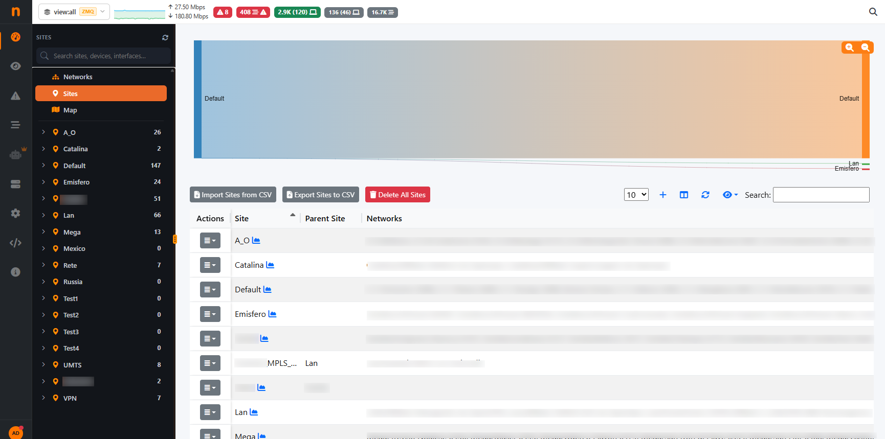
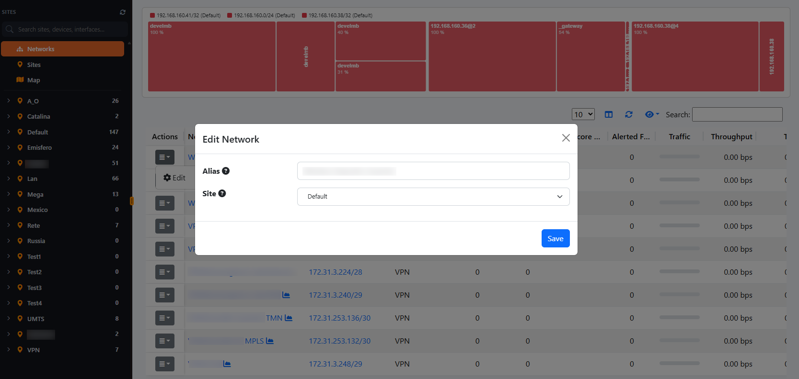
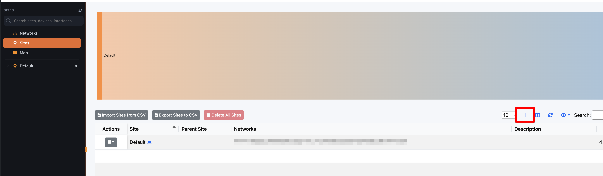
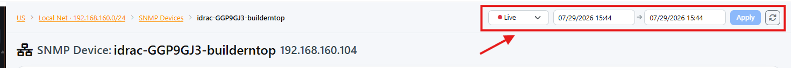
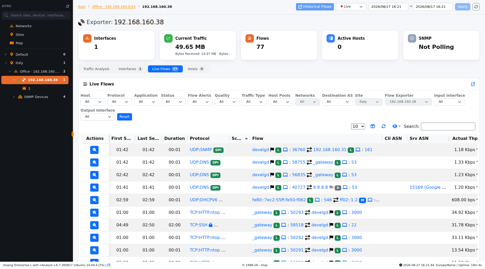
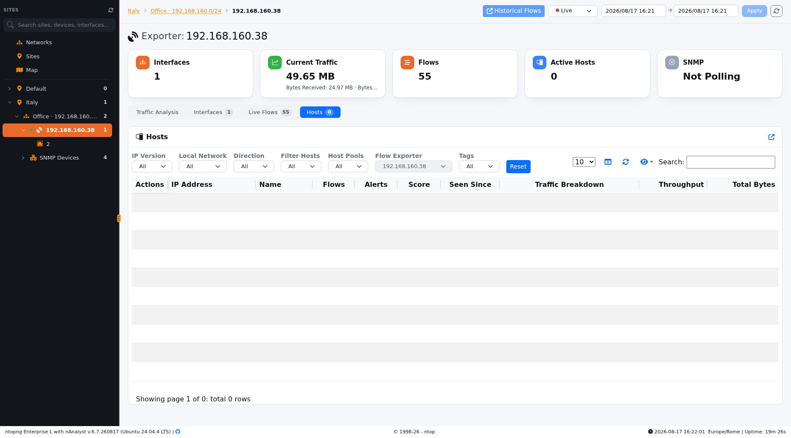
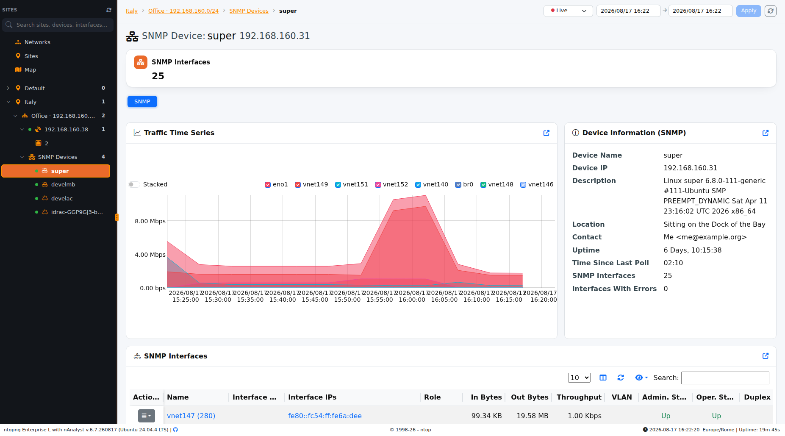
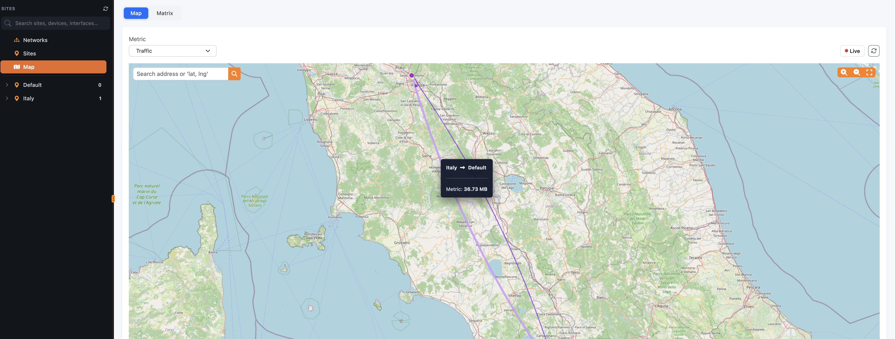

Sites
A Site is a named place - typically a physical location such as an office, a branch, or a data center - to which one or more networks can be assigned. Sites let you group networks by location, so that hosts, traffic, score and alerts can be reviewed per place rather than per individual network. A site can optionally be pinned on a map through its geographic coordinates.
Note
Sites are available with an Enterprise M (or higher) license.

The Sites Page
Sites are managed from the Dashboard Sites page. To access this page, click on Dashboard and the tab Sites should be available

The Dashboard Sites Tab
For each site the following information is shown:
Site: the display name of the site.
Parent Site: the display name of the Parent Site, if configured.
Description: an optional free-text description.
Networks: the networks currently assigned to the site.
Location: the site coordinates (latitude and longitude). The location is shown only when coordinates have been set.
The Default Site
A predefined Default site is always present and cannot be removed. Every network that has not been explicitly assigned to a site belongs to the Default site, which therefore acts as a fallback. Being a reserved site, the Default site cannot be edited or deleted, and its actions are disabled in the table.
Adding a Site
From the Sites tab, click the + button at the top of the table to open the creation form, then fill in the following fields:
Site (required): from 2 to 32 characters. Only letters, numbers and spaces are allowed (accented letters are accepted). The name must be unique: two sites cannot share the same name.
Description (optional): up to 256 characters.
Parent Site (optional): enter an other already configured Site to create a hierachy between sites.
Location (optional): set the position either by typing the Latitude and Longitude values, or by clicking directly on the map below the fields. The map marker and the coordinate fields stay in sync, so a click updates the values and typing updates the marker. Latitude must be between -90 and 90, longitude between -180 and 180.

The Site creation / edit form
Note
The search above the geographic map can be used to search for a Nation, a City or an address
Click Save to create the site. If a value is not valid (for example a duplicate name) the form reports the error and the site is not saved.
Editing a Site
In the Sites tab, use the edit action on a site row to reopen the same form with the current values pre-filled. Update the fields as needed and click Save. The Default site is reserved and cannot be edited.
Deleting a Site
Use the delete action on a site row and confirm to remove the site. The Default site is reserved and cannot be deleted.
Note
Deleting a site does not prevent removal when networks are still assigned to it. Any network that was assigned to the deleted site falls back to the Default site.
Assigning a Network to a Site
Networks are not assigned to a site from the site form. Instead, the assignment is done from the Networks tab: edit a network and choose the desired site from the list. The Site column in the networks list shows the site each network currently belongs to. Networks left unassigned remain part of the Default site.

Adding an Exporter to a Site
Flow exporters (NetFlow/sFlow/IPFIX probes, nProbe collectors) are not assigned to a site directly: an exporter belongs to the site of the network it is part of. By default every exporter, and its network, belongs to the Default site. To move an exporter to another site:
Start ntopng with a file listing the monitored networks, using the
-moption (for example-m networks.txt). The network the exporter belongs to must be in this list, otherwise it is not available in the Networks tab.If the destination site does not exist yet, create it: open the Sites tab of the Dashboard Sites page and click the + button (see Adding a Site).

Creating a new Site with the + button
Open the Networks tab, click the Actions button of the network the exporter is part of and select Edit.
In the Site field choose the desired site and click Save.

Changing the Site of a network
The exporter is now listed under the new site, together with its network. All the other exporters of the same network are moved as well.
Navigating Sites
After creating a site, it will be displayed on the left navigation bar.
It is possible to search Sites, Devices, ecc. by entering the name of the Asset to search in the search bar

All the information displayed are searchable both on Live Data and Historical Data

From there it is possible to display the data of each site in details:
Flows (if present);
Exporters (if present);
Networks;

It is also possible to drill down more inside each information displayed. If available, the Networks and Exporters will be displayed inside the Site and they are also navigable with their own statistics and data.
For Networks, there will be displayed:
Exporters (if present)
Flows
Hosts

Site Charts
The traffic history of a site (incoming, outgoing and internal traffic) is shown in its chart page. Open it from the chart icon of a site in the Sites list, or from the open icon of the Traffic Time Series card while a site is selected. The page title shows the path Sites / <site name>: click Sites to go back to the dashboard. As in the other chart pages, you can change the time range, the metric and the chart layout.
Exploring an Exporter
Clicking a Flow Exporter (NetFlow/sFlow/IPFIX probe) inside a network opens its detail view, with a breadcrumb (Site > Network > Exporter) at the top and header cards for Interfaces count, Current Traffic (sent/received split), Flows, Active Hosts and SNMP polling status. The exporter view has four sub-tabs:
- Traffic Analysis
The default sub-tab: a Traffic Time Series chart (sent/received bytes over time), a Top Applications table (protocol name, traffic volume and percentage share), and Top Local Hosts / Top Remote Hosts tables. Every table row links out to the Flows page pre-filtered by that application or host.
- Interfaces
Lists each physical/logical interface exposed by the exporter, with Bytes Received and Bytes Sent columns. Clicking an interface narrows the traffic charts to that single interface.
- Live Flows
The live flows table for traffic seen by this exporter: source/destination host, application protocol, L4 protocol, ports, VLAN, throughput and duration, with the same filter bar (protocol, status, QoE, traffic type, host pool, ASN, in/out interface index) used on the standalone Flows page.

- Hosts
The host table for this exporter: every local/remote host that has generated traffic through it, with traffic volume, country/ASN and the usual host-table column set (sortable, searchable, with column visibility control).

- SNMP
Not a sub-tab on the exporter itself: the SNMP status card in the header shows Polling or Not Polling. If the exporter is also configured as a polled SNMP device, an SNMP Devices entry appears as a sibling node under it in the left sidebar tree - see below.
Exploring an SNMP Device
Finally SNMP devices are also available (only if polled by ntopng with SNMP). Expanding SNMP Devices in the sidebar tree lists every polled device by name; selecting one opens its detail view with:
SNMP Interfaces header count.
A Traffic Time Series chart, with one selectable line per SNMP interface (physical port, virtual interface, bridge, etc.).
A Device Information card: Device Name, Device IP, Description (from the device’s system description OID), Location, Contact, Uptime, Time Since Last Poll, SNMP Interfaces count and Interfaces With Errors count.
An SNMP Interfaces table, one row per polled port/interface, with columns for Name, Interface Alias, Interface IPs, Role, In/Out Bytes, Throughput, VLAN, Admin. Status, Oper. Status, Duplex Status, MACs, In Discards, In/Out Errors, Uplink/Downlink Speed, Last In/Out Usage and Last Change. Clicking a row opens that single SNMP interface’s own detail page.

Map and Matrix Views
Besides the Networks and Sites tabs, the Sites Dashboard offers a Map tab with two sub-views for a geographic and cross-site perspective on traffic:
Map: plots every site with configured coordinates on an OpenStreetMap base layer. A Metric selector controls what each site marker represents (defaults to Traffic), and a Live/historical toggle switches between current and time-ranged data. Markers can be searched by address or by typing coordinates directly.

Matrix: a site-to-site traffic matrix, where rows and columns are sites and each cell shows the traffic exchanged between that pair of sites - useful for spotting which sites communicate most with each other.